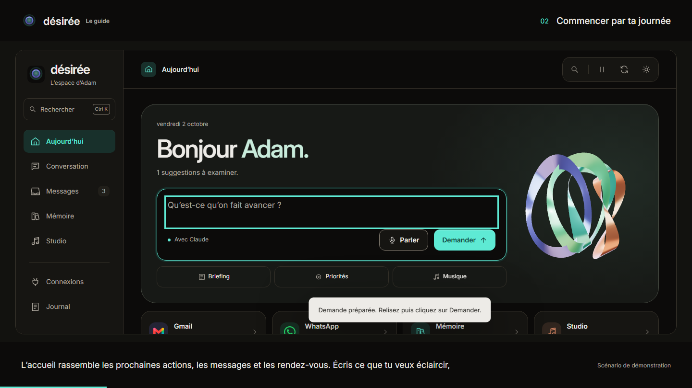

Messages into decisions.
A sourced briefing, dated observations and actions you can review, edit and track.
A personal AI workspace
Désirée brings messages, memory and music together to prepare a useful briefing and keep the next action in view.
Public demo: fictional data, scripted responses. The personal workspace stays private.

A sourced briefing, dated observations and actions you can review, edit and track.
Goals and preferences in a persistent memory, with one search across the workspace.
Read-only Ableton session inspection and new MIDI files created after approval.
Designed and built by Adam Chabbi
Python, SQLite, tool-based orchestration, GSAP and Three.js. The personal version combines dated source captures, persistent actions and human approval.
Public demo sourceNavigate, inspect example messages, track actions, save local preferences and download an example MIDI. Changes stay in your browser.
No live mailbox access or model calls here. Continuous sync, a permanent wake word, Ableton Live control and the full OpenJarvis system are not implemented.